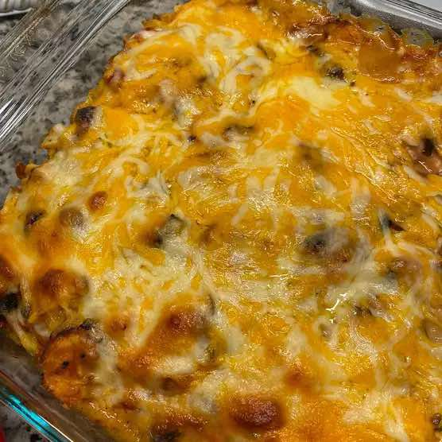

Salsa Chicken Rice Casserole

Layers of rice, chicken breast, a creamy soup and salsa mixture and two
kinds of cheese add up to a simply yummy salsa casserole! This recipe is
a family favorite because it's delicious and easily made with
ingredients found in the pantry.
- Prep: 20 mins
- Cook: 1 hr
- Total: 1 hr 20 mins
- Yield: 8 servings
Ingredients
- 1⅓ cups uncooked white rice
- 2⅔ cups water
- 4 skinless, boneless chicken breast halves
- 2 cups shredded Monterey Jack cheese
- 2 cups shredded Cheddar cheese
- 1 (10.75 ounce) can condensed cream of chicken soup
- 1 (10.75 ounce) can condensed cream of mushroom soup
- 1 onion, chopped
- 1½ cups mild salsa
Directions
-
Place rice and water in a saucepan, and bring to a boil. Reduce heat
to low, cover, and simmer for 20 minutes.
-
Meanwhile, place chicken breast halves into a large saucepan, and
fill the pan with water. Bring to a boil, and cook for 20 minutes,
or until done. Remove chicken from water. When cool enough to
handle, cut meat into bite-size pieces.
-
Preheat oven to 350 degrees F (175 degrees C). Lightly grease a 9x13
inch baking dish.
-
In a medium bowl, combine Monterey Jack and Cheddar cheeses. In a
separate bowl, mix together cream of chicken soup, cream of mushroom
soup, onion, and salsa. Layer 1/2 of the rice, 1/2 of the chicken,
1/2 of the soup and salsa mixture, and 1/2 of the cheese mixture in
prepared dish. Repeat layers, ending with cheese.
- Bake in preheated oven for about 40 minutes, or until bubbly.